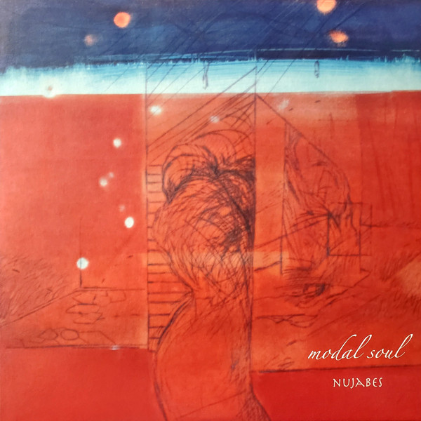

“What’s the best album of all time?”
It’s a question that’s sparked countless debates, fueled endless discussions, and perhaps even ended a few friendships (looking at you, Apple Music). Ask a hundred music lovers, and you’ll likely get a hundred different answers. The beauty of music, after all, lies in its subjectivity.
But what if I told you there’s an album so transcendent, so masterfully crafted, that it doesn’t just enter the conversation - it changes it entirely?
Enter Modal Soul by Nujabes.
Now, I’m not here to claim it’s definitively the greatest album ever created. That would be a disservice to the vast tapestry of musical genius that spans genres and generations. But I am here to make a bold statement: Modal Soul isn’t just a contender for the title of best album - it’s a front-runner that demands your attention and deserves your reverence.
The Soulful Maestro: Jun Seba, a.k.a Nujabes
Picture this: It’s 11:30 PM, your desk lamp casts a warm glow over scattered textbooks, and your laptop screen flickers with that familiar looping animation of an anime girl studying. The gentle, hypnotic beats flowing through your headphones are your lifeline, keeping you focused and calm as you tackle that seemingly insurmountable pile of coursework. Sound familiar?
If you’ve ever found yourself lost in the soothing embrace of lo-fi hip-hop, particularly during those late-night study sessions, you’ve been touched by the legacy of a musical genius: Jun Seba, better known to the world as Nujabes.
Nujabes isn’t just another name in the vast sea of music producers. He’s a legend, a pioneer, a maestro who orchestrated a revolution in sound that continues to reverberate through the music industry long after his untimely departure. Walk into the hallowed halls of Shibuya’s Tower Records in Tokyo, and you’ll find an entire section dedicated to this one man, proudly emblazoned with the title “Godfather of Lo-Fi Hip-Hop.” It’s not just a catchy moniker; it’s a testament to his enduring influence.
But who was Nujabes, really? And how did his music become the blueprint for an entire genre that has comforted and inspired millions? To understand this, we need to dive into his magnum opus, the album that encapsulates everything that made Nujabes a true musical visionary: Modal Soul.
The Album: A Symphony of Samples and Beats
At first glance, Modal Soul might seem like just another hip-hop album with jazz samples. But Nujabes’ approach to production sets it apart, creating a sonic landscape that’s as revolutionary as it is mesmerizing.
Nujabes’ sampling technique is the cornerstone of his unique sound. Unlike his contemporaries, who often chopped samples for rhythmic effect, Nujabes selected samples for their emotional weight. He would often preserve the melodic integrity of his samples, layering them with minimal alterations. Take “Reflection Eternal,” where he samples the intro from “I Miss You” by Noriko Kose, retaining its full melodic idea. He then adds a vocal sample from Kenny Rankin’s “Marie” and a classic boom-bap drum pattern, resulting in a track that’s both groovy and profoundly soulful.
This approach extends to his drum patterns, which are a study in minimalism. The beats are there to elevate, not dominate, striking a perfect balance between carrying the groove and complementing the melodic samples. This creates a sound that feels more introspective and soul-stirring compared to beat-heavy productions.
Nujabes wasn’t confined to one genre, either. While jazz was his primary influence, Modal Soul showcased his diverse musical palette. “World’s End Rhapsody,” for instance, starts with a soul/funk sample but concludes with a four-on-the-floor pattern reminiscent of house music, all while maintaining the classic boom-bap drum sound.
In tracks featuring vocals, Nujabes treated the human voice as another instrument in the mix, integrating it seamlessly with the instrumental elements rather than allowing it to dominate. This approach is brilliantly exemplified in “Luv(sic.) pt3” featuring Shing02. In this track, Shing02’s verses flow like another layer in the musical tapestry, perfectly balanced with the melodic samples and beats. The vocals don’t overpower the instrumentation but instead complement it, creating a harmonious blend that enhances the overall mood and emotional impact of the song.
Personal Resonance: My Journey Through Modal Soul
This album isn’t just a collection of tracks; it’s a gateway, a portal into the rich, textured world of Nujabes’ musical genius.
For anyone looking to explore Nujabes’ discography, Modal Soul is the perfect launching pad. It’s like being handed a masterfully crafted map before embarking on an epic journey. Each track is a stepping stone, guiding you deeper into the lush soundscapes that define Nujabes’ unique style.
Now, let’s be real - no album is perfect, and Modal Soul has its peaks and valleys. But here’s the thing: even in its low moments, there’s a sense of intentionality. It’s as if Nujabes carefully orchestrated every high and low, creating a musical journey that mimics the ebbs and flows of life itself. Nothing feels out of place or accidental; every note, every sample, every beat feels like it’s exactly where it’s meant to be.
What struck me most was Nujabes’ approach to sampling. It’s not just about finding a cool sound to loop. No, it’s much more than that. Listening to Modal Soul feels like you’re privy to Nujabes’ love letter to music itself. Each sample is treated with reverence, carefully woven into the fabric of the song in a way that honors its origin while creating something entirely new. It’s not appropriation; it’s a celebration, an homage to the music that inspired him.
So, who should listen to this album? Well, if you’re a fan of old-school boom-bap hip-hop, this is a no-brainer. Jazz enthusiasts? You’re in for a treat. But honestly, I’d go further. I’d recommend Modal Soul to anyone who appreciates music, period. There’s something in this album for everyone - a groove, a melody, a mood that will resonate with you, regardless of your usual musical preferences.
In the end, Modal Soul isn’t just an album you listen to; it’s an experience you immerse yourself in. It’s a testament to Nujabes’ artistry, a benchmark in the evolution of hip-hop, and a timeless piece of music that continues to inspire and move listeners. Whether you’re discovering Nujabes for the first time or revisiting this classic, Modal Soul promises a journey through sound that you won’t soon forget.